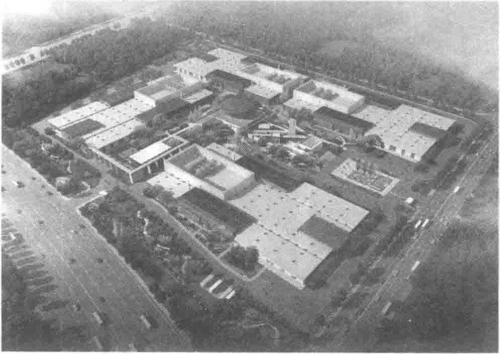

第 10 章 Chapter 10
京东集团华东数据中心
10.1 京东集团华东数据中心简介
江苏省宿迁市处于淮海经济区中部，苏、鲁、皖三省通衢之地，属陇海经济带、沿海经济带、沿江经济带交叉辐射区，同时作为西电（气）东输和年发电量1.4×1010kW·h的田湾核电站的高压走廊，能源及电力供应充足，具有高质量的输电网络和充裕的供电能力。
京东集团华东数据中心（见图10-1）是京东集团自主设计、自主筹建的第一个大型数据中心，位于宿迁湖滨新区晓店镇西侧，青铜路以南，发展大道以西。整个数据中心园区占地面积200亩，总建筑面积约60 000m2，由四栋建筑规模完全相同的数据中心模块及其附属的综合楼组成，是一个具有时代气息的绿色生态科技产业园。
